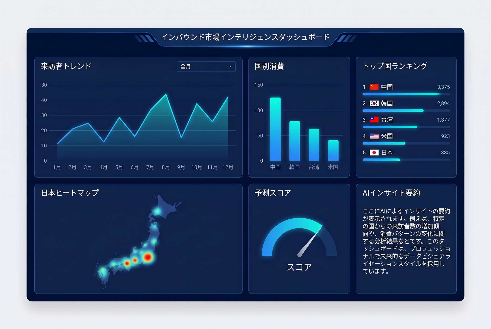
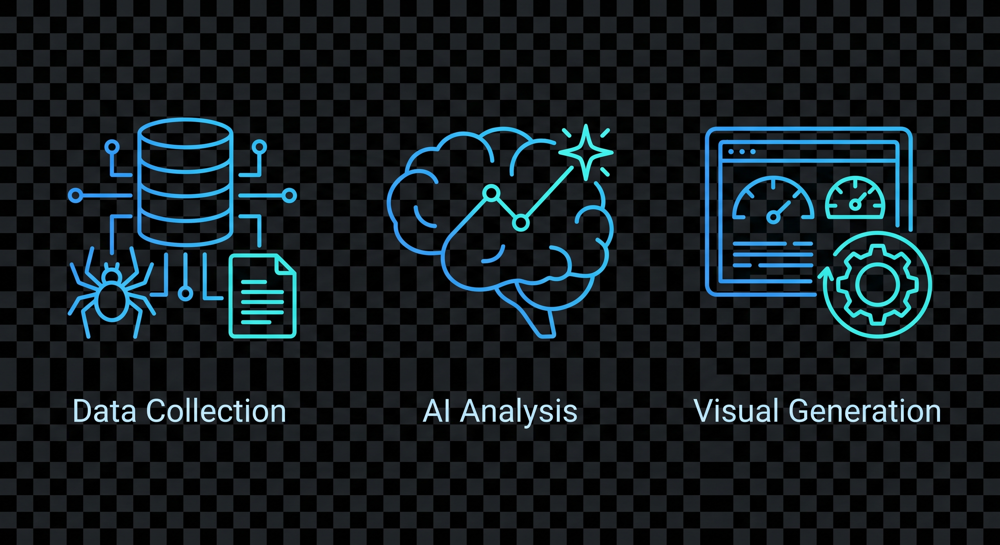

官庁統計・観光データ・消費トレンドを自動収集し、AI解析・BI可視化・マーケティング施策までを一気通貫で支援します。
24/7
Monitoring
AI
Analysis
BI
Dashboard

AI Core Processing
JTA / JNTO / PDF / Open Data → Market Intelligence
Data Ingestion Engine
JTA・JNTOの統計ページを定期監視。最新PDF・統計更新を検知し、重複管理しながら構造化データへ変換します。
LLM Insight Engine
数値データをAIが解析し、訪日消費・国籍別トレンド・商圏機会を経営判断に使えるインサイトへ変換します。
Business Output Layer
分析結果をダッシュボード、月次レポート、提案資料、SNS配信用ビジュアルへ展開します。

Visitors
3.61M
Spend
2.3T
Forecast
↑18%
単なる文章生成ではなく、データ収集・商業分析・ビジュアル出力までを業務プロセスとして設計したプロンプト群です。

01
JTA・JNTO・PDF資料を自動検出し、履歴管理しながらデータ化する収集プロンプト。
Used for: Monitoring / PDF Parse
Output: Structured Text / JSON
02
訪日客数・消費額・国籍別変化を読み解き、経営判断に使える洞察へ変換。
Used for: Insight / Forecast
Output: Report / Strategy
03
分析結果をダッシュボード、レポート図版、SNSカードに展開する生成指令。
Used for: BI / Creative
Output: Dashboard / Card
AIが自動生成した最新の訪日インバウンド市場データとビジネス洞察。